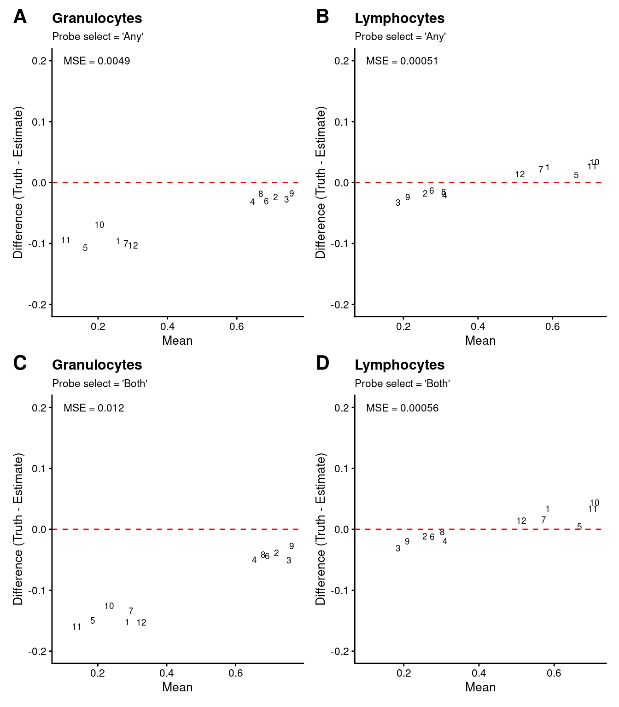
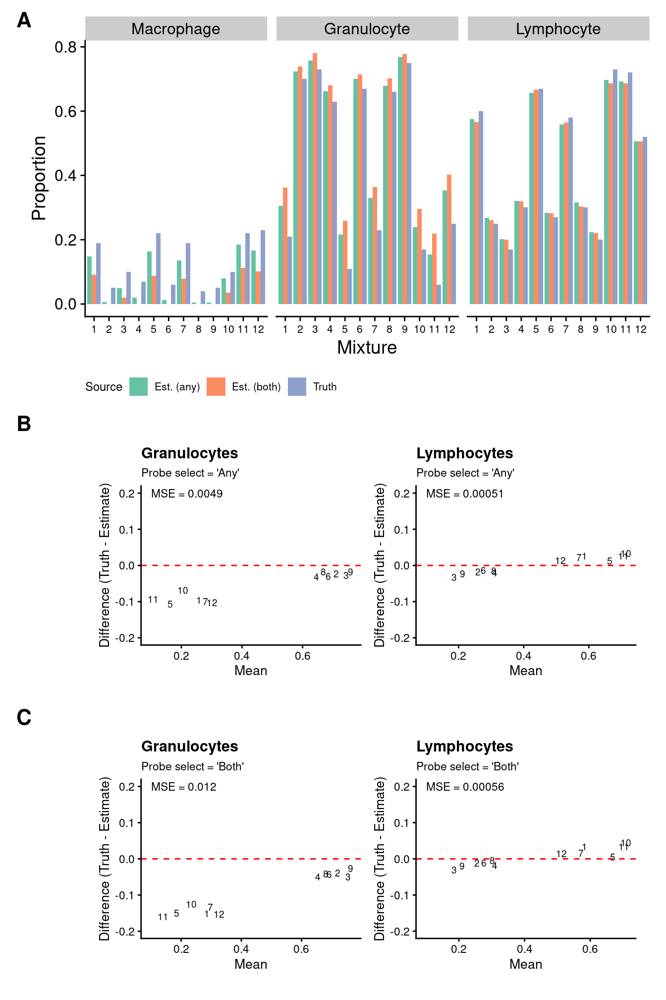
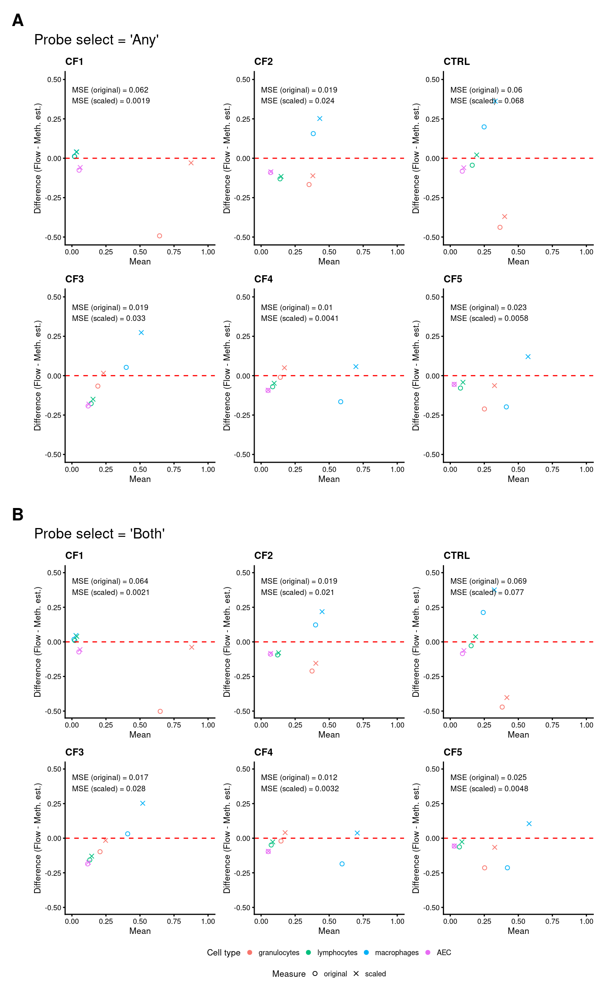
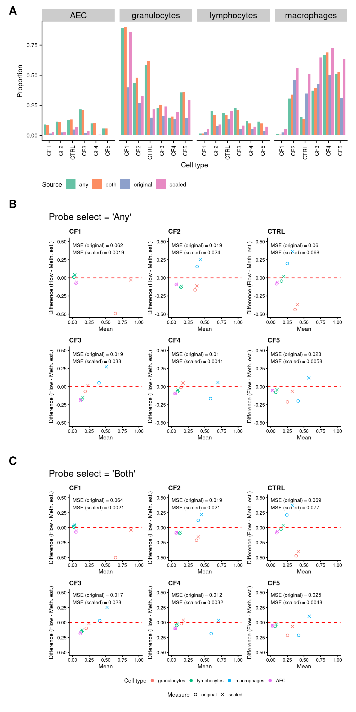

Methylation profiling of paediatric Bronchoalveolar Lavage (BAL)
Estimating cell type proportions of raw paediatric BAL
Jovana Maksimovic
2021-11-23
Last updated: 2021-11-23
Checks: 7 0
Knit directory: paed-BAL-meth-ref/
This reproducible R Markdown analysis was created with workflowr (version 1.6.2). The Checks tab describes the reproducibility checks that were applied when the results were created. The Past versions tab lists the development history.
Great! Since the R Markdown file has been committed to the Git repository, you know the exact version of the code that produced these results.
Great job! The global environment was empty. Objects defined in the global environment can affect the analysis in your R Markdown file in unknown ways. For reproduciblity it’s best to always run the code in an empty environment.
The command set.seed(20210927) was run prior to running the code in the R Markdown file. Setting a seed ensures that any results that rely on randomness, e.g. subsampling or permutations, are reproducible.
Great job! Recording the operating system, R version, and package versions is critical for reproducibility.
Nice! There were no cached chunks for this analysis, so you can be confident that you successfully produced the results during this run.
Great job! Using relative paths to the files within your workflowr project makes it easier to run your code on other machines.
Great! You are using Git for version control. Tracking code development and connecting the code version to the results is critical for reproducibility.
The results in this page were generated with repository version 4675dde. See the Past versions tab to see a history of the changes made to the R Markdown and HTML files.
Note that you need to be careful to ensure that all relevant files for the analysis have been committed to Git prior to generating the results (you can use wflow_publish or wflow_git_commit). workflowr only checks the R Markdown file, but you know if there are other scripts or data files that it depends on. Below is the status of the Git repository when the results were generated:
Ignored files:
Ignored: .Rhistory
Ignored: .Rproj.user/
Ignored: code/deident.R
Ignored: code/geoprep.R
Ignored: data/idat/
Ignored: data/processedData.RData
Ignored: output/GO-Any.csv
Ignored: output/GO-Both.csv
Ignored: output/GO-Diff.csv
Ignored: output/GO-Same.csv
Ignored: output/intensities.csv
Ignored: output/processed.csv
Unstaged changes:
Modified: .gitignore
Modified: data/Samplesheet_BAL_reference.csv
Note that any generated files, e.g. HTML, png, CSS, etc., are not included in this status report because it is ok for generated content to have uncommitted changes.
These are the previous versions of the repository in which changes were made to the R Markdown (analysis/estimateCellProportions.Rmd) and HTML (docs/estimateCellProportions.html) files. If you’ve configured a remote Git repository (see ?wflow_git_remote), click on the hyperlinks in the table below to view the files as they were in that past version.
| File | Version | Author | Date | Message |
|---|---|---|---|---|
| Rmd | 4675dde | Jovana Maksimovic | 2021-11-23 | wflow_publish(c(“analysis/dataPreprocess.Rmd”, “analysis/estimateCellProportions.Rmd”)) |
| html | 2150685 | Jovana Maksimovic | 2021-10-01 | Build site. |
| Rmd | 56c3bda | Jovana Maksimovic | 2021-10-01 | wflow_publish(c(“analysis/estimateCellProportions.Rmd”)) |
| html | a90dc68 | Jovana Maksimovic | 2021-09-28 | Build site. |
| Rmd | e968190 | Jovana Maksimovic | 2021-09-28 | wflow_publish(c(“analysis/dataPreprocess.Rmd”, “analysis/estimateCellProportions.Rmd”)) |
| html | f75f3f5 | Jovana Maksimovic | 2021-09-28 | Build site. |
| Rmd | 2bd43cc | Jovana Maksimovic | 2021-09-28 | wflow_publish(“analysis/estimateCellProportions.Rmd”) |
| html | 10147c0 | Jovana Maksimovic | 2021-09-27 | Build site. |
| Rmd | 1114da3 | Jovana Maksimovic | 2021-09-27 | wflow_publish(c(“analysis/index.Rmd”, “analysis/dataPreprocess.Rmd”, |
Data import
Load all necessary analysis packages.
library(here)
library(workflowr)
library(glue)
#Load Packages Required for Analysis
library(limma)
library(minfi)
library(matrixStats)
library(IlluminaHumanMethylationEPICanno.ilm10b4.hg19)
library(IlluminaHumanMethylationEPICmanifest)
library(FlowSorted.Blood.EPIC)
library(ggplot2)
library(ExperimentHub)
library(reshape2)
library(tidyverse)
library(patchwork)
library(missMethyl)
library(cowplot)Load raw and processed data objects generated by exploratory analysis.
# load data objects
load(here("data/processedData.RData"))
# load modified cell type estimation function
source(here("code/functions.R"))As expected, we see clear clustering by cell types.
mds <- plotMDS(mVals[, cells], top = 1000, gene.selection="common", plot = FALSE)
dat <- tibble(x = mds$x,
y = mds$y,
sample = targets$Sample_Group[cells],
run = targets$Sample_run[cells],
ID = targets$Sample_ID[cells])
p <- ggplot(dat, aes(x = x, y = y, colour = sample)) +
geom_point(aes(shape = run), size = 3) +
labs(colour = "Sample type", shape = "Run",
x = "Principal component 1",
y = "Principal component 2") +
ggtitle("Cell types") +
scale_color_manual(values = pal[-2])
p
| Version | Author | Date |
|---|---|---|
| 10147c0 | Jovana Maksimovic | 2021-09-27 |
Identify cell type discriminating probes
Identify cell type discriminating probesusing the any and both method (both selects an equal number (50) of probes (with F-stat p-value < 1E-8) with the greatest magnitude of effect from the hyper and hypo methylated sides; or any, which selects the 100 probes (with F-stat p-value < 1E-8) with the greatest magnitude of difference regardless of direction of effect.).
mSetSqFlt$CellType <- as.character(targets$Sample_Group)
pAny <- minfi:::pickCompProbes(mSet = mSetSqFlt[rownames(mSetSqFlt) %in% rownames(mValsNoXY),
cells], probeSelect = "any",
numProbes = 50, compositeCellType = "Lavage",
cellTypes = unique(targets$Sample_Group[cells]))
pBoth <- minfi:::pickCompProbes(mSet = mSetSqFlt[rownames(mSetSqFlt) %in% rownames(mValsNoXY),
cells], probeSelect = "both",
numProbes = 50, compositeCellType = "Lavage",
cellTypes = unique(targets$Sample_Group[cells]))Compare different selection methods
Use a heatmap to visulalise the methylation of the cell type discriminating probes in the cell sorted samples.
Figure 3
par(mfrow=c(1,2))
NMF::aheatmap(bVals[rownames(bVals) %in% rownames(pAny$coefEsts), cells],
annCol = list(CellType = as.character(targets$Sample_Group[cells])),
labCol = NA, labRow = NA, annColors = list(pal[-2]),
main="A. Probe select = 'Any'")
NMF::aheatmap(bVals[rownames(bVals) %in% rownames(pBoth$coefEsts), cells],
annCol = list(CellType = as.character(targets$Sample_Group[cells])),
labCol = NA, labRow = NA, annColors = list(pal[-2]),
main="B. Probe select = 'Both'")
| Version | Author | Date |
|---|---|---|
| 10147c0 | Jovana Maksimovic | 2021-09-27 |
Characteristics of probes selected using “any”
ann <- getAnnotation(IlluminaHumanMethylationEPICanno.ilm10b4.hg19)
sub <- targets[targets$Sample_Group != "Raw",]
tmp <- mValsNoXY[rownames(mValsNoXY) %in% rownames(pAny$coefEsts),
colnames(mValsNoXY) %in% sub$Sample_ID]
tmpAny <- ann[match(rownames(tmp), ann$Name), -c(5:17,20,21,23,32:37)]
topAnyFile <- here("output",
glue("GO-Any.csv"))
if(!file.exists(topAnyFile)){
gstAny <- gometh(sig.cpg = rownames(pAny$coefEsts),
all.cpg = rownames(mValsNoXY),
anno = ann)
topAny <- topGSA(gstAny, number = 50)
write.csv(topAny, topAnyFile)
} else {
topAny <- read.csv(topAnyFile, row.names = 1)
}
topAny %>% knitr::kable()| ONTOLOGY | TERM | N | DE | P.DE | FDR | |
|---|---|---|---|---|---|---|
| GO:0045321 | BP | leukocyte activation | 1197 | 37 | 0.0000054 | 0.1223846 |
| GO:0042110 | BP | T cell activation | 464 | 20 | 0.0000268 | 0.2365053 |
| GO:0006955 | BP | immune response | 1912 | 45 | 0.0000431 | 0.2365053 |
| GO:0007159 | BP | leukocyte cell-cell adhesion | 348 | 16 | 0.0000447 | 0.2365053 |
| GO:1903037 | BP | regulation of leukocyte cell-cell adhesion | 314 | 15 | 0.0000523 | 0.2365053 |
| GO:0001775 | BP | cell activation | 1351 | 38 | 0.0000648 | 0.2442241 |
| GO:0050851 | BP | antigen receptor-mediated signaling pathway | 235 | 13 | 0.0001199 | 0.3725532 |
| GO:0002684 | BP | positive regulation of immune system process | 950 | 28 | 0.0001597 | 0.3725532 |
| GO:0002768 | BP | immune response-regulating cell surface receptor signaling pathway | 384 | 17 | 0.0001673 | 0.3725532 |
| GO:0002764 | BP | immune response-regulating signaling pathway | 387 | 17 | 0.0001731 | 0.3725532 |
| GO:0002429 | BP | immune response-activating cell surface receptor signaling pathway | 353 | 16 | 0.0001976 | 0.3725532 |
| GO:0002757 | BP | immune response-activating signal transduction | 353 | 16 | 0.0001976 | 0.3725532 |
| GO:0002682 | BP | regulation of immune system process | 1458 | 37 | 0.0002646 | 0.4604714 |
| GO:0046649 | BP | lymphocyte activation | 661 | 22 | 0.0003418 | 0.5270029 |
| GO:0042060 | BP | wound healing | 514 | 21 | 0.0003495 | 0.5270029 |
| GO:0050900 | BP | leukocyte migration | 442 | 16 | 0.0005924 | 0.7996714 |
| GO:0045579 | BP | positive regulation of B cell differentiation | 11 | 3 | 0.0006356 | 0.7996714 |
| GO:0042117 | BP | monocyte activation | 10 | 3 | 0.0006594 | 0.7996714 |
| GO:0002252 | BP | immune effector process | 1149 | 29 | 0.0006717 | 0.7996714 |
| GO:0002280 | BP | monocyte activation involved in immune response | 2 | 2 | 0.0007406 | 0.8376712 |
| GO:0002253 | BP | activation of immune response | 436 | 16 | 0.0007811 | 0.8414019 |
| GO:0044706 | BP | multi-multicellular organism process | 214 | 10 | 0.0009203 | 0.9462395 |
| GO:0000506 | CC | glycosylphosphatidylinositol-N-acetylglucosaminyltransferase (GPI-GnT) complex | 7 | 2 | 0.0010079 | 0.9482012 |
| GO:0033292 | BP | T-tubule organization | 9 | 3 | 0.0010734 | 0.9482012 |
| GO:0050776 | BP | regulation of immune response | 868 | 23 | 0.0011227 | 0.9482012 |
| GO:0002274 | BP | myeloid leukocyte activation | 638 | 19 | 0.0011231 | 0.9482012 |
| GO:0050778 | BP | positive regulation of immune response | 631 | 19 | 0.0011318 | 0.9482012 |
| GO:0090575 | CC | RNA polymerase II transcription regulator complex | 153 | 9 | 0.0013139 | 1.0000000 |
| GO:0071889 | MF | 14-3-3 protein binding | 32 | 5 | 0.0014092 | 1.0000000 |
| GO:0047756 | MF | chondroitin 4-sulfotransferase activity | 3 | 2 | 0.0014457 | 1.0000000 |
| GO:2000401 | BP | regulation of lymphocyte migration | 61 | 5 | 0.0014616 | 1.0000000 |
| GO:0022407 | BP | regulation of cell-cell adhesion | 423 | 16 | 0.0015827 | 1.0000000 |
| GO:0072676 | BP | lymphocyte migration | 110 | 6 | 0.0015912 | 1.0000000 |
| GO:0009611 | BP | response to wounding | 631 | 22 | 0.0020200 | 1.0000000 |
| GO:0050765 | BP | negative regulation of phagocytosis | 21 | 3 | 0.0020369 | 1.0000000 |
| GO:1903039 | BP | positive regulation of leukocyte cell-cell adhesion | 225 | 10 | 0.0023518 | 1.0000000 |
| GO:0002263 | BP | cell activation involved in immune response | 691 | 19 | 0.0024561 | 1.0000000 |
| GO:0016427 | MF | tRNA (cytosine) methyltransferase activity | 8 | 2 | 0.0025014 | 1.0000000 |
| GO:0032940 | BP | secretion by cell | 1368 | 35 | 0.0025651 | 1.0000000 |
| GO:0097470 | CC | ribbon synapse | 11 | 3 | 0.0026002 | 1.0000000 |
| GO:1990266 | BP | neutrophil migration | 115 | 6 | 0.0026339 | 1.0000000 |
| GO:0001025 | MF | RNA polymerase III general transcription initiation factor binding | 3 | 2 | 0.0026871 | 1.0000000 |
| GO:0001156 | MF | TFIIIC-class transcription factor complex binding | 3 | 2 | 0.0026871 | 1.0000000 |
| GO:0010452 | BP | histone H3-K36 methylation | 14 | 3 | 0.0027548 | 1.0000000 |
| GO:0045648 | BP | positive regulation of erythrocyte differentiation | 31 | 4 | 0.0027781 | 1.0000000 |
| GO:0043374 | BP | CD8-positive, alpha-beta T cell differentiation | 15 | 3 | 0.0028800 | 1.0000000 |
| GO:0010793 | BP | regulation of mRNA export from nucleus | 5 | 2 | 0.0029618 | 1.0000000 |
| GO:0034481 | MF | chondroitin sulfotransferase activity | 4 | 2 | 0.0030074 | 1.0000000 |
| GO:0050863 | BP | regulation of T cell activation | 321 | 12 | 0.0030207 | 1.0000000 |
| GO:0002376 | BP | immune system process | 2849 | 57 | 0.0030691 | 1.0000000 |
flatAnn <- missMethyl:::.getFlatAnnotation("EPIC")
dat <- tmpAny
dat %>% data.frame %>%
left_join(flatAnn, by = c("Name" = "cpg")) -> dat
dat %>%
ggplot(aes(x = Relation_to_Island,
fill = Relation_to_Island)) +
geom_bar(aes(y = (..count..)/sum(..count..)*100)) +
labs(x = "Relation_to_Island", y = "% Features") +
theme_cowplot(font_size = 12) -> p1
dat %>%
mutate(Gene = UCSC_RefGene_Name != "") %>%
ggplot(aes(x = Gene,
fill = Gene)) +
geom_bar(aes(y = (..count..)/sum(..count..)*100)) +
labs(x = "Gene_associated", y = "% Features") +
theme_cowplot(font_size = 12) -> p2
dat %>%
mutate(group = ifelse(is.na(group), "Intergenic", group)) %>%
ggplot(aes(x = group,
fill = group)) +
geom_bar(aes(y = (..count..)/sum(..count..)*100)) +
labs(x = "Position_in_Gene", y = "% Features") +
theme_cowplot(font_size = 12) -> p3
dat %>%
mutate(DHS = DNase_Hypersensitivity_NAME != "") %>%
ggplot(aes(x = DHS,
fill = DHS)) +
geom_bar(aes(y = (..count..)/sum(..count..)*100)) +
labs(x = "DNase_Hypersensitivity_Site", y = "% Features") +
theme_cowplot(font_size = 12) -> p4
((p1 | p2 ) /
(p3 | p4)) &
theme(legend.position = "none",
legend.text = element_text(size = 7),
legend.title = element_text(size = 8),
axis.text = element_text(size = 6)) -> anyLoci
anyLoci
| Version | Author | Date |
|---|---|---|
| 10147c0 | Jovana Maksimovic | 2021-09-27 |
Characteristics of probes selected using “both”
sub <- targets[targets$Sample_Group != "Raw",]
tmp <- mValsNoXY[rownames(mValsNoXY) %in% rownames(pBoth$coefEsts),
colnames(mValsNoXY) %in% sub$Sample_ID]
tmpBoth <- ann[match(rownames(tmp), ann$Name), -c(5:17,20,21,23,32:37)]
topBothFile <- here("output",
glue("GO-Both.csv"))
if(!file.exists(topBothFile)){
gstBoth <- gometh(sig.cpg = rownames(pBoth$coefEsts),
all.cpg = rownames(mValsNoXY),
anno = ann)
topBoth <- topGSA(gstBoth, number = 50)
write.csv(topBoth, topBothFile)
} else {
topBoth <- read.csv(topBothFile, row.names = 1)
}
topGSA(topBoth) %>% knitr::kable()| ONTOLOGY | TERM | N | DE | P.DE | FDR | |
|---|---|---|---|---|---|---|
| GO:0007159 | BP | leukocyte cell-cell adhesion | 348 | 17 | 0.0000247 | 0.5583832 |
| GO:0042110 | BP | T cell activation | 464 | 19 | 0.0001745 | 1.0000000 |
| GO:0045321 | BP | leukocyte activation | 1197 | 34 | 0.0002183 | 1.0000000 |
| GO:0046649 | BP | lymphocyte activation | 661 | 23 | 0.0002950 | 1.0000000 |
| GO:1903037 | BP | regulation of leukocyte cell-cell adhesion | 314 | 14 | 0.0003422 | 1.0000000 |
| GO:0006955 | BP | immune response | 1912 | 44 | 0.0003422 | 1.0000000 |
| GO:0001775 | BP | cell activation | 1351 | 37 | 0.0004153 | 1.0000000 |
| GO:0044272 | BP | sulfur compound biosynthetic process | 181 | 10 | 0.0005641 | 1.0000000 |
| GO:0042117 | BP | monocyte activation | 10 | 3 | 0.0007333 | 1.0000000 |
| GO:0002280 | BP | monocyte activation involved in immune response | 2 | 2 | 0.0007949 | 1.0000000 |
| GO:0002682 | BP | regulation of immune system process | 1458 | 37 | 0.0007958 | 1.0000000 |
| GO:0002684 | BP | positive regulation of immune system process | 950 | 27 | 0.0008903 | 1.0000000 |
| GO:0036037 | BP | CD8-positive, alpha-beta T cell activation | 27 | 4 | 0.0010062 | 1.0000000 |
| GO:1903039 | BP | positive regulation of leukocyte cell-cell adhesion | 225 | 11 | 0.0010420 | 1.0000000 |
| GO:0048010 | BP | vascular endothelial growth factor receptor signaling pathway | 95 | 8 | 0.0010930 | 1.0000000 |
| GO:0050776 | BP | regulation of immune response | 868 | 24 | 0.0011057 | 1.0000000 |
| GO:0033292 | BP | T-tubule organization | 9 | 3 | 0.0012279 | 1.0000000 |
| GO:0000506 | CC | glycosylphosphatidylinositol-N-acetylglucosaminyltransferase (GPI-GnT) complex | 7 | 2 | 0.0012681 | 1.0000000 |
| GO:0007256 | BP | activation of JNKK activity | 10 | 3 | 0.0012843 | 1.0000000 |
| GO:0015961 | BP | diadenosine polyphosphate catabolic process | 4 | 2 | 0.0013242 | 1.0000000 |
dat <- tmpBoth
dat %>% data.frame %>%
left_join(flatAnn, by = c("Name" = "cpg")) -> dat
dat %>%
ggplot(aes(x = Relation_to_Island,
fill = Relation_to_Island)) +
geom_bar(aes(y = (..count..)/sum(..count..)*100)) +
labs(x = "Relation_to_Island", y = "% Features") +
theme_cowplot(font_size = 12) -> p1
dat %>%
mutate(Gene = UCSC_RefGene_Name != "") %>%
ggplot(aes(x = Gene,
fill = Gene)) +
geom_bar(aes(y = (..count..)/sum(..count..)*100)) +
labs(x = "Gene_associated", y = "% Features") +
theme_cowplot(font_size = 12) -> p2
dat %>%
mutate(group = ifelse(is.na(group), "Intergenic", group)) %>%
ggplot(aes(x = group,
fill = group)) +
geom_bar(aes(y = (..count..)/sum(..count..)*100)) +
labs(x = "Position_in_Gene", y = "% Features") +
theme_cowplot(font_size = 12) -> p3
dat %>%
mutate(DHS = DNase_Hypersensitivity_NAME != "") %>%
ggplot(aes(x = DHS,
fill = DHS)) +
geom_bar(aes(y = (..count..)/sum(..count..)*100)) +
labs(x = "DNase_Hypersensitivity_Site", y = "% Features") +
theme_cowplot(font_size = 12) -> p4
((p1 | p2 ) /
(p3 | p4)) &
theme(legend.position = "none",
legend.text = element_text(size = 7),
legend.title = element_text(size = 8),
axis.text = element_text(size = 6)) -> bothLoci
bothLociSupplementary Figure 3
(wrap_elements(anyLoci + plot_annotation(title = "Probe select = 'Any'")) /
wrap_elements(bothLoci + plot_annotation(title = "Probe select = 'Both'"))) + plot_annotation(tag_levels = "A") &
theme(plot.tag = element_text(face = 'bold', size = 16))
| Version | Author | Date |
|---|---|---|
| 10147c0 | Jovana Maksimovic | 2021-09-27 |
Characteristics of probes that are the same for “any” and “both”
same <- intersect(rownames(pAny$coefEsts), rownames(pBoth$coefEsts))
length(same)[1] 221The number of probes that is the same using any and both is 221. This is 55.25% of the total number of cell type discriminating probes.
tmp <- mValsNoXY[rownames(mValsNoXY) %in% same,
colnames(mValsNoXY) %in% sub$Sample_ID]
tmpSame <- ann[match(rownames(tmp), ann$Name), -c(5:17,20,21,23,32:37)]
topSameFile <- here("output/GO-Same.csv")
if(!file.exists(topSameFile)){
gstSame <- gometh(sig.cpg = same,
all.cpg = rownames(mValsNoXY),
anno = ann)
topSame <- topGSA(gstSame, number = 50)
write.csv(topSame, topSameFile)
} else {
topSame <- read.csv(topSameFile, row.names = 1)
}
topGSA(topSame) %>% knitr::kable()| ONTOLOGY | TERM | N | DE | P.DE | FDR | |
|---|---|---|---|---|---|---|
| GO:0042117 | BP | monocyte activation | 10 | 3 | 0.0001583 | 1 |
| GO:0033292 | BP | T-tubule organization | 9 | 3 | 0.0002727 | 1 |
| GO:0002280 | BP | monocyte activation involved in immune response | 2 | 2 | 0.0002863 | 1 |
| GO:0007159 | BP | leukocyte cell-cell adhesion | 348 | 11 | 0.0002880 | 1 |
| GO:0000506 | CC | glycosylphosphatidylinositol-N-acetylglucosaminyltransferase (GPI-GnT) complex | 7 | 2 | 0.0004144 | 1 |
| GO:0050765 | BP | negative regulation of phagocytosis | 21 | 3 | 0.0005205 | 1 |
| GO:1903037 | BP | regulation of leukocyte cell-cell adhesion | 314 | 10 | 0.0005293 | 1 |
| GO:0047756 | MF | chondroitin 4-sulfotransferase activity | 3 | 2 | 0.0005562 | 1 |
| GO:0097470 | CC | ribbon synapse | 11 | 3 | 0.0006711 | 1 |
| GO:0010452 | BP | histone H3-K36 methylation | 14 | 3 | 0.0006845 | 1 |
| GO:0090023 | BP | positive regulation of neutrophil chemotaxis | 25 | 3 | 0.0010073 | 1 |
| GO:0010793 | BP | regulation of mRNA export from nucleus | 5 | 2 | 0.0011003 | 1 |
| GO:0071624 | BP | positive regulation of granulocyte chemotaxis | 28 | 3 | 0.0011239 | 1 |
| GO:0034481 | MF | chondroitin sulfotransferase activity | 4 | 2 | 0.0011489 | 1 |
| GO:2000197 | BP | regulation of ribonucleoprotein complex localization | 6 | 2 | 0.0013055 | 1 |
| GO:1903039 | BP | positive regulation of leukocyte cell-cell adhesion | 225 | 8 | 0.0013234 | 1 |
| GO:1902624 | BP | positive regulation of neutrophil migration | 27 | 3 | 0.0014916 | 1 |
| GO:0043378 | BP | positive regulation of CD8-positive, alpha-beta T cell differentiation | 4 | 2 | 0.0014967 | 1 |
| GO:0022409 | BP | positive regulation of cell-cell adhesion | 269 | 9 | 0.0015263 | 1 |
| GO:0042060 | BP | wound healing | 514 | 14 | 0.0016411 | 1 |
Characteristics of probes that are different between “any” and “both”
diff <- c(rownames(pAny$coefEsts)[!rownames(pAny$coefEsts) %in% same],
rownames(pBoth$coefEsts)[!rownames(pBoth$coefEsts) %in% same])
length(diff)[1] 358The number of probes that is different using any and both is 358. This is 89.5% of the total number of cell type discriminating probes.
tmp <- mValsNoXY[rownames(mValsNoXY) %in% diff,
colnames(mValsNoXY) %in% sub$Sample_ID]
tmpDiff <- ann[match(rownames(tmp), ann$Name), -c(5:17,20,21,23,32:37)]
topDiffFile <- here("output/GO-Diff.csv")
if(!file.exists(topDiffFile)){
gstDiff <- gometh(sig.cpg = diff,
all.cpg = rownames(mValsNoXY),
anno = ann)
topDiff <- topGSA(gstDiff, number = 50)
write.csv(topDiff, topDiffFile)
} else {
topDiff <- read.csv(topDiffFile, row.names = 1)
}
topGSA(topDiff) %>% knitr::kable()| ONTOLOGY | TERM | N | DE | P.DE | FDR | |
|---|---|---|---|---|---|---|
| GO:0004674 | MF | protein serine/threonine kinase activity | 412 | 21 | 0.0000145 | 0.2751161 |
| GO:0006955 | BP | immune response | 1912 | 41 | 0.0000243 | 0.2751161 |
| GO:0046328 | BP | regulation of JNK cascade | 177 | 12 | 0.0000507 | 0.2842184 |
| GO:0018210 | BP | peptidyl-threonine modification | 123 | 10 | 0.0000672 | 0.2842184 |
| GO:0046330 | BP | positive regulation of JNK cascade | 131 | 10 | 0.0000751 | 0.2842184 |
| GO:0043506 | BP | regulation of JUN kinase activity | 85 | 8 | 0.0000871 | 0.2842184 |
| GO:0046649 | BP | lymphocyte activation | 661 | 21 | 0.0001081 | 0.2842184 |
| GO:0048584 | BP | positive regulation of response to stimulus | 2258 | 51 | 0.0001149 | 0.2842184 |
| GO:0045321 | BP | leukocyte activation | 1197 | 30 | 0.0001177 | 0.2842184 |
| GO:0007254 | BP | JNK cascade | 201 | 12 | 0.0001341 | 0.2842184 |
| GO:0080135 | BP | regulation of cellular response to stress | 740 | 24 | 0.0001382 | 0.2842184 |
| GO:0018107 | BP | peptidyl-threonine phosphorylation | 114 | 9 | 0.0001825 | 0.3088682 |
| GO:0032874 | BP | positive regulation of stress-activated MAPK cascade | 162 | 10 | 0.0002110 | 0.3088682 |
| GO:0018209 | BP | peptidyl-serine modification | 316 | 15 | 0.0002165 | 0.3088682 |
| GO:0043507 | BP | positive regulation of JUN kinase activity | 70 | 7 | 0.0002184 | 0.3088682 |
| GO:0034097 | BP | response to cytokine | 1166 | 28 | 0.0002292 | 0.3088682 |
| GO:0032872 | BP | regulation of stress-activated MAPK cascade | 226 | 12 | 0.0002321 | 0.3088682 |
| GO:0070304 | BP | positive regulation of stress-activated protein kinase signaling cascade | 164 | 10 | 0.0002533 | 0.3151636 |
| GO:0034351 | BP | negative regulation of glial cell apoptotic process | 7 | 3 | 0.0002750 | 0.3151636 |
| GO:0070302 | BP | regulation of stress-activated protein kinase signaling cascade | 229 | 12 | 0.0002786 | 0.3151636 |
Estimate cell type proportions of raw BAL samples
Artificial mixture
We will use blood immune cell mixtures with known cell type proportions published by Salas et al. 2018 to test the accuracy of cell type proportion estimates derived using our reference library.
hub <- ExperimentHub() snapshotDate(): 2020-10-27query(hub, "FlowSorted.Blood.EPIC") ExperimentHub with 1 record
# snapshotDate(): 2020-10-27
# names(): EH1136
# package(): FlowSorted.Blood.EPIC
# $dataprovider: GEO
# $species: Homo sapiens
# $rdataclass: RGChannelSet
# $rdatadateadded: 2018-04-20
# $title: FlowSorted.Blood.EPIC: Illumina Human Methylation data from EPIC o...
# $description: The FlowSorted.Blood.EPIC package contains Illumina HumanMet...
# $taxonomyid: 9606
# $genome: hg19
# $sourcetype: tar.gz
# $sourceurl: https://www.ncbi.nlm.nih.gov/geo/query/acc.cgi?acc=GSE110554
# $sourcesize: NA
# $tags: c("ExperimentData", "Homo_sapiens_Data", "Tissue",
# "MicroarrayData", "Genome", "TissueMicroarrayData",
# "MethylationArrayData")
# retrieve record with 'object[["EH1136"]]' FlowSorted.Blood.EPIC <- hub[["EH1136"]]see ?FlowSorted.Blood.EPIC and browseVignettes('FlowSorted.Blood.EPIC') for documentationloading from cache# separate the reference from the testing dataset
RGsetTargets <- FlowSorted.Blood.EPIC[,FlowSorted.Blood.EPIC$CellType == "MIX"]
mixReal <- as.matrix(colData(RGsetTargets)[,12:17])/100mixDat <- melt(mixReal)
colnames(mixDat) <- c("sample","cell","proportion")
p <- ggplot(mixDat, aes(sample)) +
geom_bar(aes(fill = cell, weight=proportion)) +
scale_x_discrete(breaks = waiver(), labels=1:nrow(mixReal)) +
ggtitle("Artificially created cell mixtures") +
labs(y = "Proportion", x = "Mixture", fill = "Cell type")
p
We have not sorted our BAL lymphocytes into B cells, T cells and NK cells, so the “true” lymphocyte value we will compare to is the sum of the proportions of those cells in the artificial mixture.
mixSum <- data.frame(mixReal[,5:6], Lymph = rowSums(mixReal[,1:4]))
mixSumDat <- melt(as.matrix(mixSum))
colnames(mixSumDat) <- c("sample","cell","proportion")
p <- ggplot(mixSumDat, aes(sample)) +
geom_bar(aes(fill = cell, weight = proportion)) +
scale_x_discrete(breaks = waiver(), labels = 1:nrow(mixReal)) +
ggtitle("Artificially created cell mixtures") +
labs(y = "Proportion", x = "Mixture", fill = "Cell type")
p
| Version | Author | Date |
|---|---|---|
| 10147c0 | Jovana Maksimovic | 2021-09-27 |
Estimate cell type proportions in artificial mixture using both option.
lavageRef <- rgSet[,cells]
colData(lavageRef)$CellType <- colData(lavageRef)$Sample_Group
mixEstBoth <- estimateCellCounts2Mod(rgSet = RGsetTargets,
compositeCellType = "Lavage",
processMethod = "preprocessQuantile",
probeSelect = "both",
cellTypes = unique(targets$Sample_Group[cells]),
referencePlatform =
"IlluminaHumanMethylationEPIC",
referenceset = "lavageRef",
IDOLOptimizedCpGs = NULL,
returnAll = FALSE,
meanPlot = FALSE,
keepProbes = rownames(mValsNoXY))[estimateCellCounts2] Combining user data with reference (flow sorted) data.Warning in DataFrame(sampleNames = c(colnames(rgSet),
colnames(referenceRGset)), : 'stringsAsFactors' is ignored[estimateCellCounts2] Processing user and reference data together.[preprocessQuantile] Mapping to genome.Warning in .getSex(CN = CN, xIndex = xIndex, yIndex = yIndex, cutoff = cutoff):
An inconsistency was encountered while determining sex. One possibility is
that only one sex is present. We recommend further checks, for example with the
plotSex function.[preprocessQuantile] Fixing outliers.[preprocessQuantile] Quantile normalizing.[estimateCellCounts2] Picking probes for composition estimation.[estimateCellCounts2] Estimating composition.mixEstBoth$counts EpithelialCell Macrophage Granulocyte Lymphocyte
201868590193_R01C01 0.000000e+00 9.126279e-02 0.3616930 0.5660512
201868590243_R02C01 0.000000e+00 -4.269868e-20 0.7388455 0.2612947
201868590267_R01C01 0.000000e+00 1.915281e-02 0.7804746 0.2008515
201868590267_R05C01 0.000000e+00 -3.189628e-20 0.6796117 0.3189449
201869680008_R01C01 2.404706e-04 8.807077e-02 0.2596974 0.6657974
201869680008_R03C01 -1.179253e-18 0.000000e+00 0.7136450 0.2817510
201869680008_R06C01 0.000000e+00 7.828989e-02 0.3636083 0.5640165
201869680030_R03C01 0.000000e+00 -4.890270e-20 0.7014649 0.3042240
201869680030_R07C01 0.000000e+00 -5.957902e-20 0.7772578 0.2200175
201870610056_R01C01 0.000000e+00 3.605620e-02 0.2957907 0.6859857
201870610056_R03C01 0.000000e+00 1.131711e-01 0.2196631 0.6858875
201870610111_R03C01 0.000000e+00 1.024043e-01 0.4025289 0.5060127mixBoth <- reshape2::melt(mixEstBoth$counts)
colnames(mixBoth) <- c("sample","cell","proportion")
p1 <- ggplot(mixBoth, aes(x = sample, fill = cell)) +
geom_bar(aes(weight = proportion)) +
ggtitle("Cell type proportion estimates",
subtitle = "Probe selection: Both") +
labs(x = "Sample", y = "Proportion", fill = "Cell type") +
scale_x_discrete(breaks = waiver(), labels = 1:nrow(mixReal)) +
scale_fill_manual(values = pal)
p1
| Version | Author | Date |
|---|---|---|
| 10147c0 | Jovana Maksimovic | 2021-09-27 |
(p | p1) +
plot_layout(guides = "collect") &
theme(legend.position = "bottom",
legend.box = "vertical")Estimate cell type proportions in artificial mixture using “any” option.
mixEstAny <- estimateCellCounts2Mod(rgSet = RGsetTargets,
compositeCellType = "Lavage",
processMethod = "preprocessQuantile",
probeSelect = "any",
cellTypes = unique(targets$Sample_Group[cells]),
referencePlatform =
"IlluminaHumanMethylationEPIC",
referenceset = "lavageRef",
IDOLOptimizedCpGs = NULL,
returnAll = FALSE,
meanPlot = FALSE,
keepProbes = rownames(mValsNoXY))[estimateCellCounts2] Combining user data with reference (flow sorted) data.Warning in DataFrame(sampleNames = c(colnames(rgSet),
colnames(referenceRGset)), : 'stringsAsFactors' is ignored[estimateCellCounts2] Processing user and reference data together.[preprocessQuantile] Mapping to genome.Warning in .getSex(CN = CN, xIndex = xIndex, yIndex = yIndex, cutoff = cutoff):
An inconsistency was encountered while determining sex. One possibility is
that only one sex is present. We recommend further checks, for example with the
plotSex function.[preprocessQuantile] Fixing outliers.[preprocessQuantile] Quantile normalizing.[estimateCellCounts2] Picking probes for composition estimation.[estimateCellCounts2] Estimating composition.mixEstAny$counts EpithelialCell Macrophage Granulocyte Lymphocyte
201868590193_R01C01 0.000000e+00 0.147918242 0.3053763 0.5746209
201868590243_R02C01 0.000000e+00 0.006390512 0.7234165 0.2676621
201868590267_R01C01 1.734723e-18 0.048680044 0.7572886 0.2027038
201868590267_R05C01 0.000000e+00 0.019133044 0.6613300 0.3209722
201869680008_R01C01 0.000000e+00 0.162845311 0.2165590 0.6574659
201869680008_R03C01 0.000000e+00 0.012635790 0.7008658 0.2832374
201869680008_R06C01 0.000000e+00 0.135170214 0.3300484 0.5587240
201869680030_R03C01 -1.734723e-18 0.004996861 0.6784126 0.3156032
201869680030_R07C01 0.000000e+00 0.004925952 0.7677886 0.2238971
201870610056_R01C01 0.000000e+00 0.079967402 0.2388535 0.6965378
201870610056_R03C01 0.000000e+00 0.184260959 0.1537695 0.6933920
201870610111_R03C01 0.000000e+00 0.166083551 0.3528550 0.5060989mixAny <- reshape2::melt(mixEstAny$counts)
colnames(mixAny) <- c("sample","cell","proportion")
p2 <- ggplot(mixAny, aes(x = sample, fill = cell)) +
geom_bar(aes(weight = proportion)) +
ggtitle("Cell type proportion estimates",
subtitle = "Probe selection: Any") +
labs(x = "Sample", y = "Proportion", fill = "Cell type") +
scale_x_discrete(breaks = waiver(), labels = 1:nrow(mixReal)) +
scale_fill_manual(values = pal)
p2
| Version | Author | Date |
|---|---|---|
| 10147c0 | Jovana Maksimovic | 2021-09-27 |
(p | p2) +
plot_layout(guides = "collect") &
theme(legend.position = "bottom",
legend.box = "vertical")
| Version | Author | Date |
|---|---|---|
| 10147c0 | Jovana Maksimovic | 2021-09-27 |
mixSumDat$est <- "Truth"
mixSumDat$num <- rownames(mixSumDat)
mixBoth$est <- "Est. (both)"
mixBoth$num <- rownames(mixBoth)
mixAny$est <- "Est. (any)"
mixAny$num <- rownames(mixAny)
fullDat <- rbind(mixSumDat, mixBoth, mixAny)
fullDat$cell <- fct_recode(fullDat$cell,
Lymphocyte = "Lymph",
Granulocyte = "Neu",
Macrophage = "Mono")
fullDat <- fullDat[fullDat$cell != "EpithelialCell",]
fullDat$cell <- fct_drop(fullDat$cell)
p1a <- ggplot(fullDat, aes(x = sample, y = proportion, fill = est)) +
geom_bar(stat = "identity", position = "dodge") +
facet_grid(.~ cell, scales = "free_x") +
labs(x = "Mixture", y = "Proportion", fill = "Source") +
scale_x_discrete(breaks = waiver(), labels = 1:nrow(mixReal)) +
theme_cowplot() +
theme(axis.text.x = element_text(size = 8))
p1a
We can see that the estimates of granulocyte and lymphocute proportions made using our BAL reference panel are highly correlated with the true proportions regardless of how the discrimination probe set is chosen. Although there is evidence of slight overestimation of granulocytes in some samples. This discrepancy is likely due to the fact that the mixture samples contain only neutrophils whereas our reference panel contains all granulocyte types. However, despite this shortcoming, the cell type proportion estimates are still very accurate. This suggests that our BAL reference panel, in combination with the Houseman algorithm, should be able to accurately estimate cell type proportions in our patient BAL samples.
dat1 <- tibble(x = rowMeans(cbind(mixSum[,"Neu"],
mixEstAny$counts[,"Granulocyte"])),
y = (mixSum[,"Neu"] - mixEstAny$counts[,"Granulocyte"])) %>%
mutate(Mixture = factor(1:n()))
c1 <- cor.test(mixSum[,'Neu'], mixEstAny$counts[,'Granulocyte'])
mse1 <- signif(mean(dat1$y^2), 2)
p1 <- ggplot(dat1, aes(x = x, y = y)) +
geom_text(label = 1:nrow(mixSum), size = 2.5) +
#geom_point(aes(color = Mixture)) +
geom_hline(yintercept = 0, linetype = "dashed", colour = "red") +
labs(x = "Mean", y = "Difference (Truth - Estimate)") +
coord_cartesian(ylim = c(-0.2, 0.2)) +
ggtitle("Granulocytes", subtitle = "Probe select = 'Any'") +
theme_cowplot(font_size = 12) +
annotate("text", x = 0.1, y = 0.2, hjust = 0, size = 3,
label = glue::glue("MSE = {mse1}"))
#label = glue::glue("Pearson correlation = {round(c1$estimate, 4)}
# p-value = {signif(c1$p.value, 4)}"))
dat2 <- tibble(x = rowMeans(cbind(mixSum[,"Lymph"],
mixEstAny$counts[,"Lymphocyte"])),
y = (mixSum[,"Lymph"] - mixEstAny$counts[,"Lymphocyte"])) %>%
mutate(Mixture = factor(1:n()))
c2 <- cor.test(mixSum[,'Lymph'], mixEstAny$counts[,'Lymphocyte'])
mse2 <- signif(mean(dat2$y^2), 2)
p2 <- ggplot(dat2, aes(x = x, y = y)) +
geom_text(label = 1:nrow(mixSum), size = 2.5) +
#geom_point(aes(color = Mixture)) +
geom_hline(yintercept = 0, linetype = "dashed", colour = "red") +
labs(x = "Mean", y = "Difference (Truth - Estimate)") +
coord_cartesian(ylim = c(-0.2, 0.2)) +
ggtitle("Lymphocytes", subtitle = "Probe select = 'Any'") +
theme_cowplot(font_size = 12) +
annotate("text", x = 0.1, y = 0.2, hjust = 0, size = 3,
label = glue::glue("MSE = {mse2}"))
#label = glue::glue("Pearson correlation = {round(c2$estimate, 4)}
# p-value = {signif(c2$p.value, 4)}"))
dat3 <- tibble(x = rowMeans(cbind(mixSum[,"Neu"],
mixEstBoth$counts[,"Granulocyte"])),
y = (mixSum[,"Neu"] - mixEstBoth$counts[,"Granulocyte"])) %>%
mutate(Mixture = factor(1:n()))
c3 <- cor.test(mixSum[,'Neu'], mixEstBoth$counts[,'Granulocyte'])
mse3 <- signif(mean(dat3$y^2), 2)
p3 <- ggplot(dat3, aes(x = x, y = y)) +
geom_text(label = 1:nrow(mixSum), size = 2.5) +
#geom_point(aes(color = Mixture)) +
geom_hline(yintercept = 0, linetype = "dashed", colour = "red") +
labs(x = "Mean", y = "Difference (Truth - Estimate)") +
coord_cartesian(ylim = c(-0.2, 0.2)) +
ggtitle("Granulocytes", subtitle = "Probe select = 'Both'") +
theme_cowplot(font_size = 12) +
annotate("text", x = 0.1, y = 0.2, hjust = 0, size = 3,
label = glue::glue("MSE = {mse3}"))
#label = glue::glue("Pearson correlation = {round(c3$estimate, 4)}
# p-value = {signif(c3$p.value, 4)}"))
dat4 <- tibble(x = rowMeans(cbind(mixSum[,"Lymph"],
mixEstBoth$counts[,"Lymphocyte"])),
y = (mixSum[,"Lymph"] - mixEstBoth$counts[,"Lymphocyte"])) %>%
mutate(Mixture = factor(1:n()))
c4 <- cor.test(mixSum[,'Lymph'], mixEstBoth$counts[,'Lymphocyte'])
mse4 <- signif(mean(dat4$y^2),2)
p4 <- ggplot(dat4, aes(x = x, y = y)) +
geom_text(label = 1:nrow(mixSum), size = 2.5) +
#geom_point(aes(color = Mixture)) +
geom_hline(yintercept = 0, linetype = "dashed", colour = "red") +
labs(x = "Mean", y = "Difference (Truth - Estimate)") +
coord_cartesian(ylim = c(-0.2, 0.2)) +
ggtitle("Lymphocytes", subtitle = "Probe select = 'Both'") +
theme_cowplot(font_size = 12) +
annotate("text", x = 0.1, y = 0.2, hjust = 0, size = 3,
label = glue::glue("MSE = {mse4}"))
#label = glue::glue("Pearson correlation = {round(c4$estimate, 4)}
# p-value = {signif(c4$p.value, 4)}"))
((p1 | p2) / (p3 | p4)) +
plot_layout(guides = "collect") +
plot_annotation(tag_levels = "A") &
theme(plot.tag = element_text(face = 'bold', size = 16),
legend.position = "bottom")
| Version | Author | Date |
|---|---|---|
| 2150685 | Jovana Maksimovic | 2021-10-01 |
Figure 4
((p1a + scale_fill_brewer(palette = "Set2") +
theme(legend.position = "bottom",
legend.text = element_text(size = 8),
legend.title = element_text(size = 9))) /
(p1 | p2) / (p3 | p4)) +
plot_annotation(tag_levels = "A") &
theme(plot.tag = element_text(face = 'bold', size = 16))
If we look at MDS plots of the mixture data, as well as of the known cell type proportions, we can see that the primary source of variation is the proportion of neutrophils vs. lymphoctes. This overlaps with the the samples where we are seeing slight over estimation of granulocyte proportions.
mSetTargets <- preprocessRaw(RGsetTargets)
mValsTargets <- getM(mSetTargets)
mds <- plotMDS(mValsTargets, top = 1000, gene.selection = "common",
plot = FALSE)
dat <- tibble(x = mds$x, y = mds$y, sample = 1:12)
p1 <- ggplot(dat, aes(x = x, y = y)) +
geom_text(aes(label = sample)) +
labs(x = "Principal Component 1", y = "Principal Component 2")
mds <- plotMDS(mixReal, top = 1000, gene.selection = "common",
plot = FALSE)
dat <- tibble(x = mds$x, y = mds$y, sample = colnames(mixReal))
p2 <- ggplot(dat, aes(x = x, y = y)) +
geom_text(aes(label = sample)) +
labs(x = "Principal Component 1", y = "Principal Component 2")
(p1 | p2)
Raw BAL samples
We can estimate the proportions of cell types in each of our raw BAL samples using our reference panel. To select the most informative cell type probes from our reference panel we can either set the ’probeSelect paremeter to both, which selects an equal number (50) of probes (with F-stat p-value < 1E-8) with the greatest magnitude of effect from the hyper and hypo methylated sides; or any, which selects the 100 probes (with F-stat p-value < 1E-8) with the greatest magnitude of difference regardless of direction of effect.
Get estimates for proportion of each cell type using the any option.
patientSamps <- rgSet[, targets$Sample_Group == "Raw"]
sampleNames(patientSamps) <- targets$Sample_source[targets$Sample_Group == "Raw"]
cellEstAny <- estimateCellCounts2Mod(rgSet = patientSamps,
compositeCellType = "Lavage",
processMethod = "preprocessQuantile",
probeSelect = "any",
cellTypes = unique(targets$Sample_Group[cells]),
referencePlatform =
"IlluminaHumanMethylationEPIC",
referenceset = "lavageRef",
IDOLOptimizedCpGs = NULL,
returnAll = TRUE,
meanPlot = FALSE,
keepProbes = rownames(mValsNoXY))
cellEstAny$counts EpithelialCell Macrophage Granulocyte Lymphocyte
CF4 0.09793734 0.66758315 0.1464392 0.12014193
CF1 0.09032793 0.01217868 0.8898728 0.01503895
CF3 0.21500314 0.37264030 0.2236391 0.22976338
CF2 0.11447882 0.30504955 0.4358487 0.20458003
CF5 0.05676325 0.51112862 0.3566726 0.11446217
CTRL 0.12935134 0.14927553 0.5845740 0.18375917estAny <- reshape2::melt(cellEstAny$counts)
colnames(estAny) <- c("sample","cell","proportion")
p1 <- ggplot(estAny, aes(x = sample, fill = cell)) +
geom_bar(aes(weight = proportion)) +
ggtitle("Cell type proportion estimates",
subtitle = "Probe selection: Any") +
labs(x = "Sample", y = "Proportion", fill = "Cell type") +
theme(axis.text.x = element_text(angle = 45, hjust = 1, size = 7),
legend.position = "bottom") +
scale_fill_manual(values = pal)
p1Get estimates for proportion of each cell type using the “both” option.
cellEstBoth <- estimateCellCounts2Mod(rgSet = patientSamps,
compositeCellType = "Lavage",
processMethod = "preprocessQuantile",
probeSelect = "both",
cellTypes = unique(targets$Sample_Group[cells]),
referencePlatform =
"IlluminaHumanMethylationEPIC",
referenceset = "lavageRef",
IDOLOptimizedCpGs = NULL,
returnAll = TRUE,
meanPlot = FALSE,
keepProbes = rownames(mValsNoXY))
cellEstBoth$counts EpithelialCell Macrophage Granulocyte Lymphocyte
CF4 0.10056117 0.687692615 0.1564780 0.09890711
CF1 0.08731582 0.006252298 0.8994798 0.01570180
CF3 0.20822410 0.393715752 0.2552786 0.20976207
CF2 0.11237742 0.338996251 0.4795570 0.16823990
CF5 0.05805766 0.526853480 0.3595676 0.09876533
CTRL 0.13196682 0.136015253 0.6171474 0.16751309estBoth <- reshape2::melt(cellEstBoth$counts)
colnames(estBoth) <- c("sample","cell","proportion")
p2 <- ggplot(estBoth, aes(x = sample, fill = cell)) +
geom_bar(aes(weight = proportion)) +
ggtitle("Cell type proportion estimates",
subtitle = "Probe selection: Both") +
labs(x = "Sample", y = "Proportion", fill = "Cell type") +
theme(axis.text.x = element_text(angle = 45, hjust = 1, size = 7),
legend.position = "bottom") +
scale_fill_manual(values = pal)
p2fullDat <- rbind(estBoth, estAny)
fullDat$est <- rep(c("both","any"), each = nrow(estAny))
p1 <- ggplot(fullDat, aes(x = sample, y = proportion, fill = est)) +
geom_bar(stat = "identity", position = "dodge") +
facet_grid(.~ cell, scales = "free_x") +
labs(x = "Sample", y = "Proportion", fill = "Source") +
theme(axis.text.x = element_text(size = 8, angle = 90, hjust = 1, vjust = 0.5))
p1Compare to flow-cytometry data
samps <- targets$Sample_source[targets$Sample_Group == "Raw"]
melt(read.csv(here("data/Flow-Data-for-Reference-Panel-Scaled.csv"),
stringsAsFactors = FALSE)) %>%
mutate(variable = fct_recode(variable, CTRL = "Control")) %>%
inner_join(melt(read.csv(here("data/Flow-Data-for-Reference-Panel-Original.csv"),
stringsAsFactors = FALSE)) %>%
mutate(variable = fct_recode(variable, CTRL = "Control")),
by = c("X", "variable")) %>%
rename(cell = X,
sample = variable,
scaled = value.x,
original = value.y) %>%
mutate(scaled = scaled / 100,
original = original / 100) %>%
inner_join(estBoth[estBoth$sample %in% samps,] %>%
rename(both = proportion) %>%
inner_join(estAny[estBoth$sample %in% samps,] %>%
rename(any = proportion)) %>%
mutate(cell = gsub("EpithelialCell","AEC", cell),
cell = gsub("Macrophage","macrophages", cell),
cell = gsub("Granulocyte","granulocytes", cell),
cell = gsub("Lymphocyte","lymphocytes", cell))) %>%
pivot_longer(cols = c(scaled, original)) -> dat
p1 <- ggplot(dat, aes(x = rowMeans(cbind(value, any)),
y = value - any, colour = cell)) +
geom_point(aes(shape = name)) +
geom_hline(yintercept = 0, linetype = "dashed", colour = "red") +
facet_wrap(vars(sample), ncol = 3, nrow = 2) +
labs(x = "Mean", y = "Difference (Flow - Meth. est.)",
colour = "Cell Type", shape = "Flow Data") +
scale_shape_manual(values = c(1,4)) +
ggtitle("Probe selection: Any")
p2 <- ggplot(dat, aes(x = rowMeans(cbind(value, both)),
y = value - both, colour = cell)) +
geom_point(aes(shape = name)) +
geom_hline(yintercept = 0, linetype = "dashed", colour = "red") +
facet_wrap(vars(sample), ncol = 3, nrow = 2) +
labs(x = "Mean", y = "Difference (Flow - Meth. est.)",
colour = "Cell Type", shape = "Flow Data") +
scale_shape_manual(values = c(1,4)) +
ggtitle("Probe selection: Both")
p1 / p2 + plot_layout(guides = "collect")newPal <- pal[-2]
names(newPal) <- c("granulocytes","lymphocytes","macrophages","AEC")
samps <- as.character(unique(dat$sample))
p <- vector("list", length(samps))
for(i in 1:length(samps)){
dat1 <- filter(dat, sample == samps[i])
dat1 %>% filter(name == "original") %>%
mutate(dsq = (value - any)^2) %>%
pull(dsq) %>% mean() %>%
signif(2) -> omse
dat1 %>% filter(name == "scaled") %>%
mutate(dsq = (value - any)^2) %>%
pull(dsq) %>% mean() %>%
signif(2) -> smse
c1 <- cor.test(dat1$any, dat1$value)
p[[i]] <- ggplot(dat1, aes(x = rowMeans(cbind(value, any)),
y = value - any, colour = cell)) +
geom_point(aes(shape = name)) +
scale_color_manual(values = newPal) +
scale_shape_manual(values = c(1,4)) +
geom_hline(yintercept = 0, linetype = "dashed", colour = "red") +
labs(x = "Mean", y = "Difference (Flow - Meth. est.)",
colour = "Cell type", shape = "Measure") +
coord_cartesian(ylim = c(-0.5, 0.5), xlim = c(0, 1)) +
ggtitle({samps[i]}) +
theme_cowplot(font_size = 10) +
annotate("text", x = 0, y = 0.40, hjust = 0, size = 2.5,
label = glue::glue("MSE (original) = {omse}
MSE (scaled) = {smse}"))
#label = glue::glue("Pearson correlation = {round(c1$estimate, 4)}
# p-value = {signif(c1$p.value, 4)}"))
}
p1 <- wrap_plots(p, ncol = 3, guides = "collect") +
plot_annotation(title = "Probe select = 'Any'") &
theme(legend.position = "none")
for(i in 1:length(samps)){
dat1 <- filter(dat, sample == samps[i])
dat1 %>% filter(name == "original") %>%
mutate(dsq = (value - both)^2) %>%
pull(dsq) %>% mean() %>%
signif(2) -> omse
dat1 %>% filter(name == "scaled") %>%
mutate(dsq = (value - both)^2) %>%
pull(dsq) %>% mean() %>%
signif(2) -> smse
c1 <- cor.test(dat1$both, dat1$value)
p[[i]] <- ggplot(dat1, aes(x = rowMeans(cbind(value, both)),
y = value - both, colour = cell)) +
geom_point(aes(shape = name)) +
scale_shape_manual(values = c(1,4)) +
scale_color_manual(values = newPal) +
geom_hline(yintercept = 0, linetype = "dashed", colour = "red") +
labs(x = "Mean", y = "Difference (Flow - Meth. est.)",
colour = "Cell type", shape = "Measure") +
coord_cartesian(ylim = c(-0.5, 0.5), xlim = c(0, 1)) +
ggtitle(samps[i]) +
theme_cowplot(font_size = 10) +
annotate("text", x = 0, y = 0.40, hjust = 0, size = 2.5,
label = glue::glue("MSE (original) = {omse}
MSE (scaled) = {smse}"))
#label = glue::glue("Pearson correlation = {round(c1$estimate, 4)}
# p-value = {signif(c1$p.value, 4)}"))
}
p2 <- wrap_plots(p, ncol = 3, guides = "collect") +
plot_annotation(title = "Probe select = 'Both'") &
theme(legend.position = "bottom", legend.box = "vertical")
(wrap_elements(p1) / wrap_elements(p2)) +
plot_layout(guides = "collect") +
plot_annotation(tag_levels = "A") &
theme(plot.tag = element_text(face = 'bold', size = 16))
Figure 5
dat %>% select(cell, sample, value, name) %>%
bind_rows(dat %>% select(cell, sample, both) %>%
rename(value = both) %>%
mutate(name = "both")) %>%
bind_rows(dat %>% select(cell, sample, any) %>%
rename(value = any) %>%
mutate(name = "any")) -> longDat
p1a <- ggplot(longDat, aes(x = sample, y = value, fill = name)) +
geom_bar(stat = "identity", position = "dodge") +
facet_grid(.~ cell, scales = "free_x") +
labs(x = "Cell type", y = "Proportion", fill = "Source") +
theme_cowplot()
((p1a + scale_fill_brewer(palette = "Set2") +
theme(legend.position = "bottom",
legend.text = element_text(size = 8),
legend.title = element_text(size = 9),
axis.text = element_text(size = 8),
axis.text.x = element_text(angle = 90, hjust = 1, vjust = 0.5),
axis.title = element_text(size = 10))) /
wrap_elements(p1) / wrap_elements(p2)) +
plot_layout(heights = c(1,2,2)) +
plot_annotation(tag_levels = "A") &
theme(plot.tag = element_text(face = 'bold', size = 16))
sessionInfo()R version 4.0.2 (2020-06-22)
Platform: x86_64-pc-linux-gnu (64-bit)
Running under: CentOS Linux 7 (Core)
Matrix products: default
BLAS: /config/binaries/R/4.0.2/lib64/R/lib/libRblas.so
LAPACK: /config/binaries/R/4.0.2/lib64/R/lib/libRlapack.so
locale:
[1] LC_CTYPE=en_AU.UTF-8 LC_NUMERIC=C
[3] LC_TIME=en_AU.UTF-8 LC_COLLATE=en_AU.UTF-8
[5] LC_MONETARY=en_AU.UTF-8 LC_MESSAGES=en_AU.UTF-8
[7] LC_PAPER=en_AU.UTF-8 LC_NAME=C
[9] LC_ADDRESS=C LC_TELEPHONE=C
[11] LC_MEASUREMENT=en_AU.UTF-8 LC_IDENTIFICATION=C
attached base packages:
[1] stats4 parallel stats graphics grDevices utils datasets
[8] methods base
other attached packages:
[1] RColorBrewer_1.1-2
[2] cowplot_1.1.1
[3] missMethyl_1.24.0
[4] IlluminaHumanMethylation450kanno.ilmn12.hg19_0.6.0
[5] patchwork_1.1.1
[6] forcats_0.5.1
[7] stringr_1.4.0
[8] dplyr_1.0.4
[9] purrr_0.3.4
[10] readr_1.4.0
[11] tidyr_1.1.2
[12] tibble_3.1.2
[13] tidyverse_1.3.0
[14] reshape2_1.4.4
[15] ggplot2_3.3.5
[16] FlowSorted.Blood.EPIC_1.8.0
[17] ExperimentHub_1.16.0
[18] AnnotationHub_2.22.0
[19] BiocFileCache_1.14.0
[20] dbplyr_2.1.0
[21] nlme_3.1-152
[22] quadprog_1.5-8
[23] genefilter_1.72.1
[24] IlluminaHumanMethylationEPICmanifest_0.3.0
[25] IlluminaHumanMethylationEPICanno.ilm10b4.hg19_0.6.0
[26] minfi_1.36.0
[27] bumphunter_1.32.0
[28] locfit_1.5-9.4
[29] iterators_1.0.13
[30] foreach_1.5.1
[31] Biostrings_2.58.0
[32] XVector_0.30.0
[33] SummarizedExperiment_1.20.0
[34] Biobase_2.50.0
[35] MatrixGenerics_1.2.1
[36] matrixStats_0.59.0
[37] GenomicRanges_1.42.0
[38] GenomeInfoDb_1.26.7
[39] IRanges_2.24.1
[40] S4Vectors_0.28.1
[41] BiocGenerics_0.36.1
[42] limma_3.46.0
[43] glue_1.4.2
[44] here_1.0.1
[45] workflowr_1.6.2
loaded via a namespace (and not attached):
[1] utf8_1.2.1 tidyselect_1.1.0
[3] RSQLite_2.2.5 AnnotationDbi_1.52.0
[5] grid_4.0.2 BiocParallel_1.24.1
[7] munsell_0.5.0 codetools_0.2-18
[9] preprocessCore_1.52.1 statmod_1.4.35
[11] withr_2.4.2 colorspace_2.0-2
[13] highr_0.8 knitr_1.31
[15] rstudioapi_0.13 NMF_0.23.0
[17] labeling_0.4.2 git2r_0.28.0
[19] GenomeInfoDbData_1.2.4 bit64_4.0.5
[21] farver_2.1.0 rhdf5_2.34.0
[23] rprojroot_2.0.2 vctrs_0.3.8
[25] generics_0.1.0 xfun_0.23
[27] R6_2.5.0 doParallel_1.0.16
[29] illuminaio_0.32.0 bitops_1.0-7
[31] rhdf5filters_1.2.0 cachem_1.0.4
[33] reshape_0.8.8 DelayedArray_0.16.3
[35] assertthat_0.2.1 promises_1.2.0.1
[37] scales_1.1.1 gtable_0.3.0
[39] rlang_0.4.11 splines_4.0.2
[41] rtracklayer_1.50.0 GEOquery_2.58.0
[43] broom_0.7.4 BiocManager_1.30.10
[45] yaml_2.2.1 modelr_0.1.8
[47] GenomicFeatures_1.42.1 backports_1.2.1
[49] httpuv_1.5.5 tools_4.0.2
[51] gridBase_0.4-7 nor1mix_1.3-0
[53] ellipsis_0.3.2 siggenes_1.64.0
[55] Rcpp_1.0.6 plyr_1.8.6
[57] sparseMatrixStats_1.2.0 progress_1.2.2
[59] zlibbioc_1.36.0 RCurl_1.98-1.3
[61] prettyunits_1.1.1 openssl_1.4.3
[63] haven_2.3.1 cluster_2.1.0
[65] fs_1.5.0 magrittr_2.0.1
[67] data.table_1.13.6 reprex_1.0.0
[69] whisker_0.4 hms_1.0.0
[71] mime_0.10 evaluate_0.14
[73] xtable_1.8-4 XML_3.99-0.5
[75] mclust_5.4.7 readxl_1.3.1
[77] compiler_4.0.2 biomaRt_2.46.3
[79] crayon_1.4.1 htmltools_0.5.1.1
[81] later_1.1.0.1 lubridate_1.7.9.2
[83] DBI_1.1.1 MASS_7.3-53.1
[85] rappdirs_0.3.3 Matrix_1.3-2
[87] cli_3.0.0 pkgconfig_2.0.3
[89] registry_0.5-1 GenomicAlignments_1.26.0
[91] xml2_1.3.2 annotate_1.68.0
[93] rngtools_1.5 pkgmaker_0.32.2
[95] multtest_2.46.0 beanplot_1.2
[97] rvest_0.3.6 doRNG_1.8.2
[99] scrime_1.3.5 digest_0.6.27
[101] rmarkdown_2.6 base64_2.0
[103] cellranger_1.1.0 DelayedMatrixStats_1.12.3
[105] curl_4.3 shiny_1.6.0
[107] Rsamtools_2.6.0 lifecycle_1.0.0
[109] jsonlite_1.7.2 Rhdf5lib_1.12.1
[111] askpass_1.1 fansi_0.5.0
[113] pillar_1.6.1 lattice_0.20-41
[115] fastmap_1.1.0 httr_1.4.2
[117] survival_3.2-7 interactiveDisplayBase_1.28.0
[119] BiocVersion_3.12.0 bit_4.0.4
[121] stringi_1.5.3 HDF5Array_1.18.1
[123] blob_1.2.1 org.Hs.eg.db_3.12.0
[125] memoise_2.0.0.9000